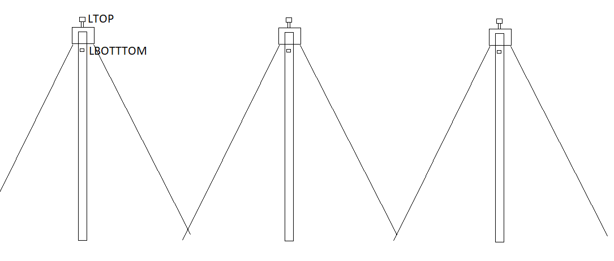
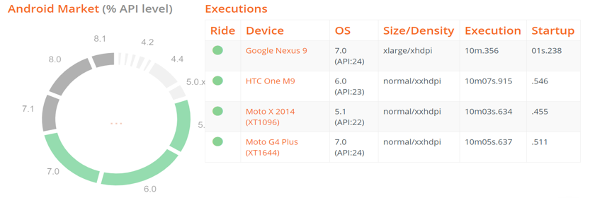

Streetlight Automation System
Undergraduate level college project
June 2018 - November 2018
4 members
Motivation
Currently in India, enormous electric energy is consumed by the old street lamps, which are switched on and off always at fixed times and it will require lot of investment to replace all of them. But operation timings of lights should be dependent on weather conditions and sunrise/sunset times. For example, on a very cloudy or foggy day street lights are required even in daytime or in some seasons the sun may rise earlier than expected or set earlier than expected.
Additionally, it is difficult to detect fault in them in the existing system. This system was designed with the aim to solve these problems by having the ability to automatically switch the lights on and off and automatically send alerts of faulty lights to the responsible authorities with location
Research
- Existing Solutions
For the first step we went through several research papers with similar solutions to get an idea of the extent of work done and what could be done differently. We collected the knowledge gained and compared the solutions with our solution to build up the features we could add.
Research
- Components and Technologies to use
We wanted the system to be built in as low cost as possible and be usable by the majority,
so we researched on the components to use and decided on the easily available and low cost components.
For a board with ability to connect to internet we went for NodeMCU instead of Arduino
or Raspberry Pi because of the integrated WiFi chip, low cost and small size.
The platform to build the mobile application was decided to be Android because of the popularity
of Android devices in the India.
Rest of system consists of low cost and commonly found devices like LDR, potentiometer etc.


Design
Based on the research we identified the key stakeholders in the system. We determined who will be using the app and what basic functionality would be needed. Using that information we created wireframes for the UI which were decided to be simple and straight forward so as to get the information conveyed quickly and efficiently.

Development and Testing
Due to time and resource constraints we developed a simple prototype that could
demonstrate the concept and tested it under various lighting conditions.
To test the Android App, we performed real time tests as well as performance tests using
Monkop, an online android app testing application

Future Enhancements and Learning
- reducing intensity of light when no traffic (using triac based light intensity control circuit)
- detecting traffic
- detection of excessive power draw
- showing areas with most faults on a map in app and a possible path to reach the areas in shortest time
This project helped greatly to understand and implement concepts I learnt throughout the university course. It was also a good experience in pre-project planning and teamwork.